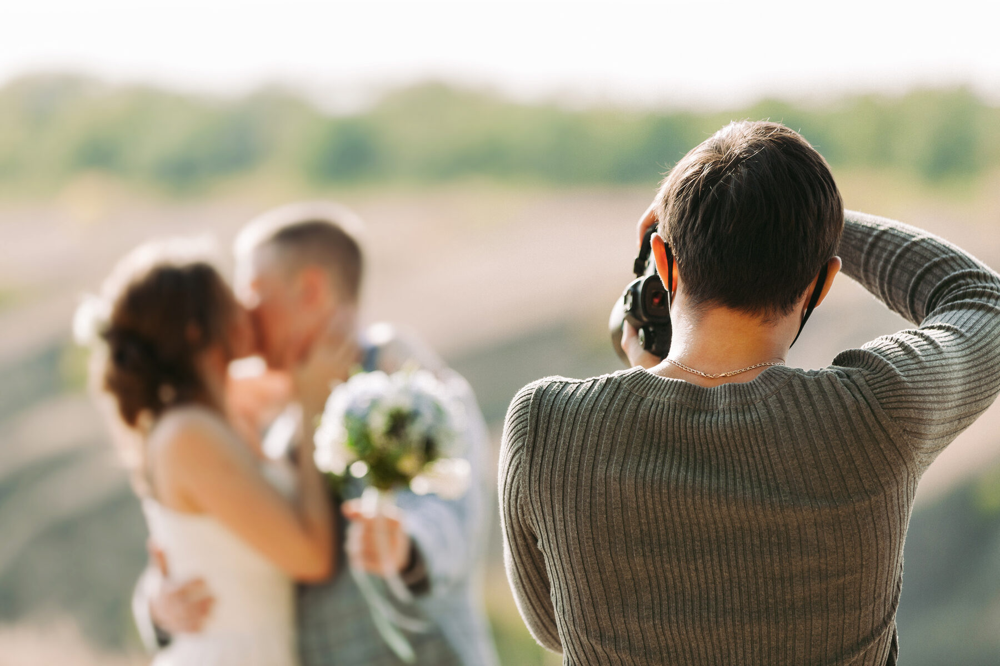

Voor fotografen op locatie
Je foto's staan online voordat de shoot voorbij is.
LiveCaptures verbindt je camera rechtstreeks met een live galerij. Elke foto wordt geïmporteerd, bewerkt met jouw eigen preset en gepubliceerd — terwijl jij nog aan het fotograferen bent. Geen kabels naar een laptop op een tafeltje, geen handmatig exporteren achteraf.
Geen spam. Eén mail zodra LiveCaptures beschikbaar is.

Hoe het werkt
Drie dingen die normaal apart gebeuren, gebeuren nu automatisch.
Geen losse import-sessie, geen aparte Lightroom-export, geen los delen achteraf. Eén verbinding, van sluiter tot scherm van je klant.
Camera verbindt draadloos met LiveCaptures
Je camera stuurt elke foto direct door zodra je 'm maakt — geen kaartje wisselen, geen kabel. Werkt met de FTP-functie die de meeste moderne camera's al aan boord hebben.
Automatische bewerking met jouw eigen stijl
LiveCaptures past jouw Lightroom-presets toe zodra een foto binnenkomt — inclusief je eigen watermerk of klant-frame. Geen twee stijlen door elkaar, geen handwerk per foto.
Live galerij, direct deelbaar
De galerij groeit mee tijdens de shoot. Klant en gasten zien nieuwe foto's binnen seconden verschijnen — via een link of QR-code die je al vóór de shoot kunt klaarzetten.
Compatibiliteit
Werkt jouw camera met LiveCaptures?
LiveCaptures ontvangt foto's rechtstreeks van je camera via FTP. Niet elk model heeft dat ingebouwd — check het hieronder in twee klikken.
Waarom fotografen overstappen
Gebouwd voor de chaos van een echte shoot, niet voor een studio-demo.
Werkt overal
Op locatie zonder vast netwerk? LiveCaptures schakelt naadloos tussen lokaal wifi en een remote-verbinding — jij hoeft niets in te stellen.
Project hervatten
Shoot onderbroken of laptop dicht geweest? Open het project gewoon opnieuw en werk verder waar je gebleven was.
Alles vooraf klaar
Galerij, QR-code, watermerk en klantframe stel je al in vóór de shoot begint — en test je zelf, zodat er niets misgaat op locatie.
Je ziet fouten meteen
Een corrupt bestand of een wegvallende verbinding zie je direct in beeld — niet pas als je 's avonds je kaartje leegtrekt.
Privacy-first
RAW-bestanden blijven van jou. Alleen de bewerkte, gepubliceerde foto gaat de deur uit naar de galerij.
Eén overzicht
Verbindingsstatus, batterij, opslag en de status van elke foto in de pijplijn — in één blik, tijdens de shoot.
Gasten maken ook mee
Gasten scannen een eigen QR-code, maken of kiezen een foto en die verschijnt meteen in een aparte gasten-galerij — naast jouw eigen, professionele foto's.
Live op het grote scherm
Zet een TV of scherm neer op locatie: de galerij draait fullscreen door, foto's verschijnen live terwijl het feest nog bezig is.
Voor wie
Gemaakt voor fotografen bij wie het móet werken, nu meteen.
LiveCaptures is er voor iedereen die fotografeert op momenten die niet overgedaan kunnen worden — en die klanten wil verrassen terwijl het feest nog bezig is.
Bruiloftsfotografen
Gasten scannen de QR-code bij het diner en zien de ceremonie al terug — in jouw stijl bewerkt. De mooiste marketing die er is: je werk gaat rond terwijl je nog aan het schieten bent.
Event- en festivalfotografen
Organisatoren willen content tijdens het event, niet een week later. Lever een live galerij als onderdeel van je pakket en onderscheid je van elke andere offerte.
Sport- en congresfotografen
Sponsoren, sprekers en deelnemers direct bedienen met bewerkt materiaal — zonder een tweede persoon die achter een laptop zit te slepen en exporteren.
Prijzen
Betaal voor opslag, niet voor gedoe.
Gelaagde abonnementen op basis van galerij-opslag. Vroege aanmelders krijgen een founder-korting op onderstaande prijzen.
€29/maand
Voor losse shoots en kleinere events.
€59/maand
Voor fotografen die wekelijks meerdere shoots draaien.
€149/maand
Voor studio's en teams met veel gelijktijdige projecten.
Ook zonder fotograaf
Voor clubs, kroegen en evenementenlocaties.
Geen fotograaf nodig — je gasten vullen het scherm zelf. Zet een QR-code op tafels of bij de deur, gasten scannen 'm en hun foto's verschijnen live op een scherm in de zaak.
Scan, foto, klaar
Geen app om te installeren, geen account nodig. Gasten scannen, maken of kiezen een foto, en die staat binnen seconden op het scherm.
Live op je eigen schermen
De TV-modus draait de hele avond fullscreen door — zet 'm aan bij binnenkomst en laat je zaak zichzelf vullen met sfeer.
In jouw huisstijl
Logo en kleuren van de zaak erop, precies zoals bij een evenementgalerij — voelt als een eigen feature, niet als een los tooltje.
Voor één locatie met één scherm.
€69/maand
Voordeliger dan losse schermen samen. Extra scherm erbij? +€12/maand.
Eén bruiloft, feest of event — geen abonnement. Gasten-QR + TV-scherm, 5 dagen geldig.
Veelgestelde vragen
Nog even praktisch.
Werkt dit met mijn camera?
LiveCaptures gebruikt de ingebouwde FTP-verzendfunctie van je camera. Vrijwel alle recente Canon-, Nikon- en Sony-body's hebben die aan boord; de app bevat per model een stappenplan voor de instellingen.
Moet mijn klant iets installeren?
Nee. De galerij is een gewone webpagina — link of QR-code openen is genoeg, op elke telefoon of laptop. Nieuwe foto's verschijnen vanzelf, zonder verversen.
Hoe zit het met mijn bewerkingsstijl?
Je gebruikt je eigen Lightroom-presets. LiveCaptures kan zelfs Lightroom Classic zelf als rendermotor gebruiken, zodat elke live-foto exact jouw bewerking krijgt — en meteen in je catalogus staat voor de nabewerking achteraf.
Wat gebeurt er met mijn RAW-bestanden?
Die blijven op jouw computer. Alleen de bewerkte, gepubliceerde JPEG gaat naar de galerij. Geen cloud-upload van je originelen, geen verrassingen.
En als het internet op locatie wegvalt?
De verwerking draait lokaal op je laptop en gaat gewoon door. Zodra de verbinding terug is, synchroniseert de galerij automatisch bij. Fouten zie je direct in het dashboard.
Kunnen gasten ook foto's toevoegen?
Ja — je zet er desgewenst een aparte gasten-galerij bij met een eigen QR-code. Gasten scannen 'm, maken of kiezen een foto, zien 'm nog even terug ter bevestiging, en die verschijnt daarna automatisch in de gasten-galerij (los van jouw eigen foto's). Handig te combineren met een TV-scherm op locatie dat de galerij live laat doorlopen. Gasten-foto's blijven 5 dagen beschikbaar om te downloaden.
Hoe installeer ik de app?
Download de .dmg voor Mac, open 'm en sleep LiveCaptures naar je Applications-map. De eerste keer openen laat macOS een melding zien ("onbekende ontwikkelaar") omdat de app nog niet bij Apple geregistreerd is — klik dan met de rechtermuisknop (of ctrl-klik) op het app-icoon en kies "Openen". Dat hoeft daarna nooit meer.
Wanneer is LiveCaptures beschikbaar?
We draaien nu de laatste tests op echte shoots. Zet je op de lijst hieronder — vroege aanmelders krijgen als eerste toegang en een founder-prijs.
Vroege toegang
Zet je op de lijst voordat we live gaan.
Vroege aanmelders krijgen als eerste toegang en een founder-prijs op hun abonnement.
Geen spam. Eén mail zodra LiveCaptures beschikbaar is.